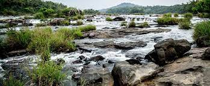
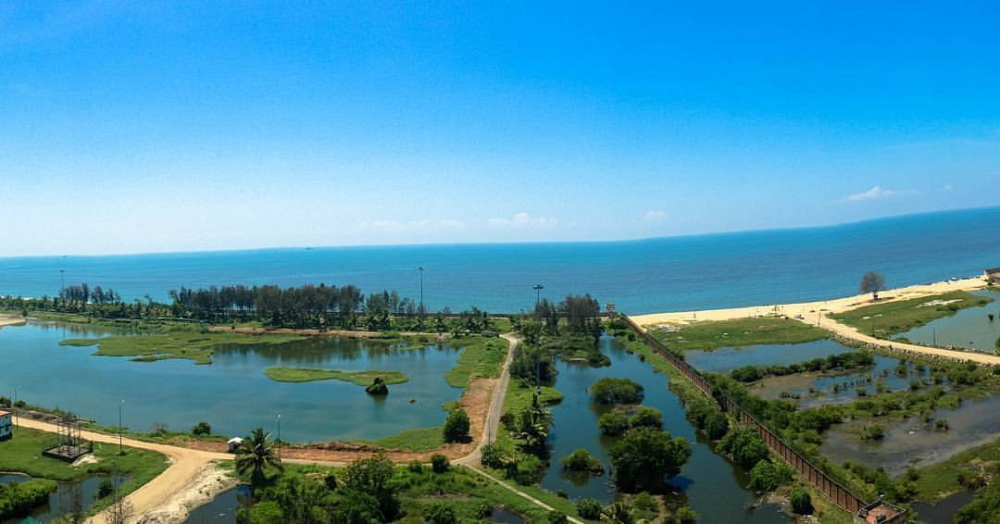
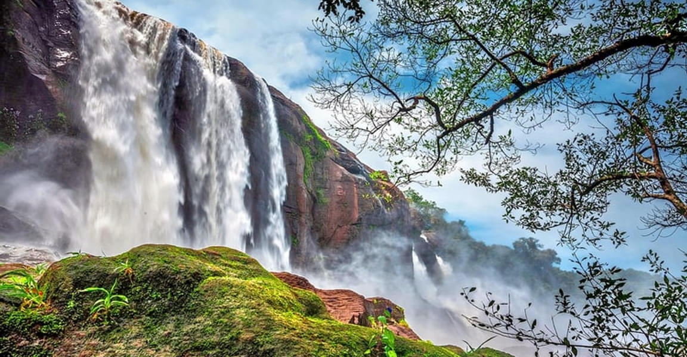
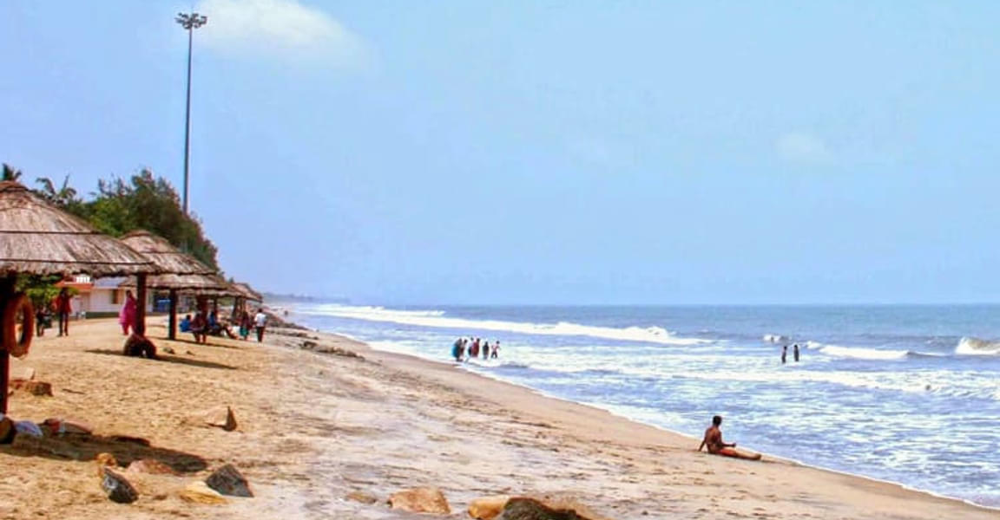
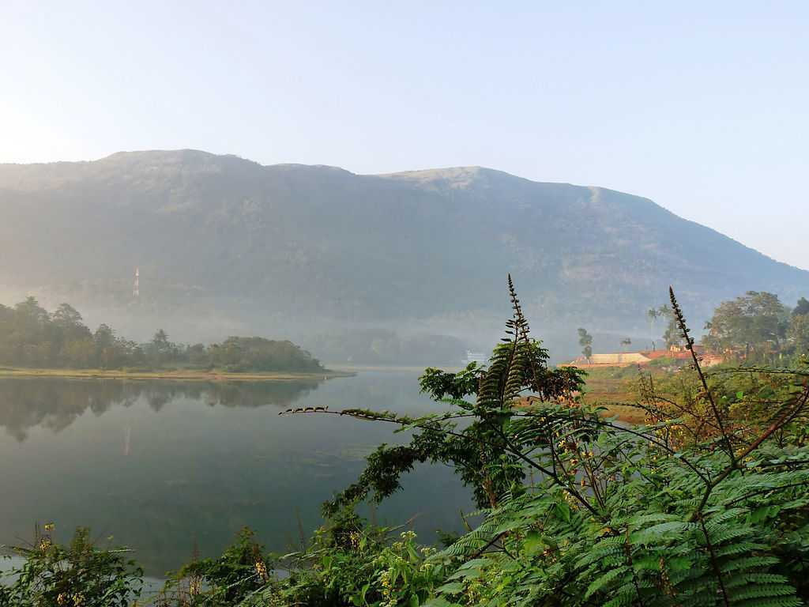
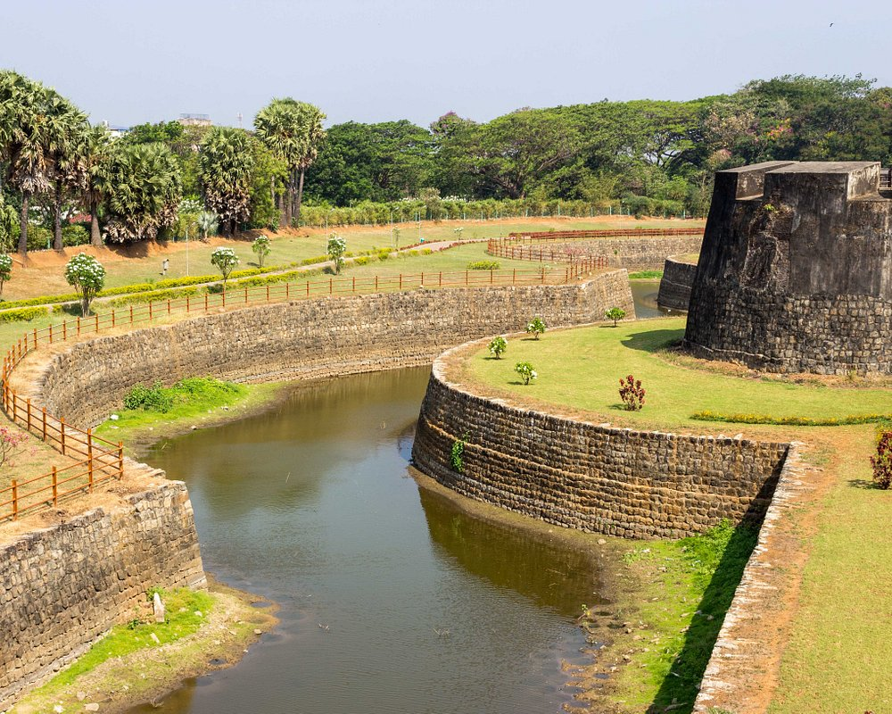
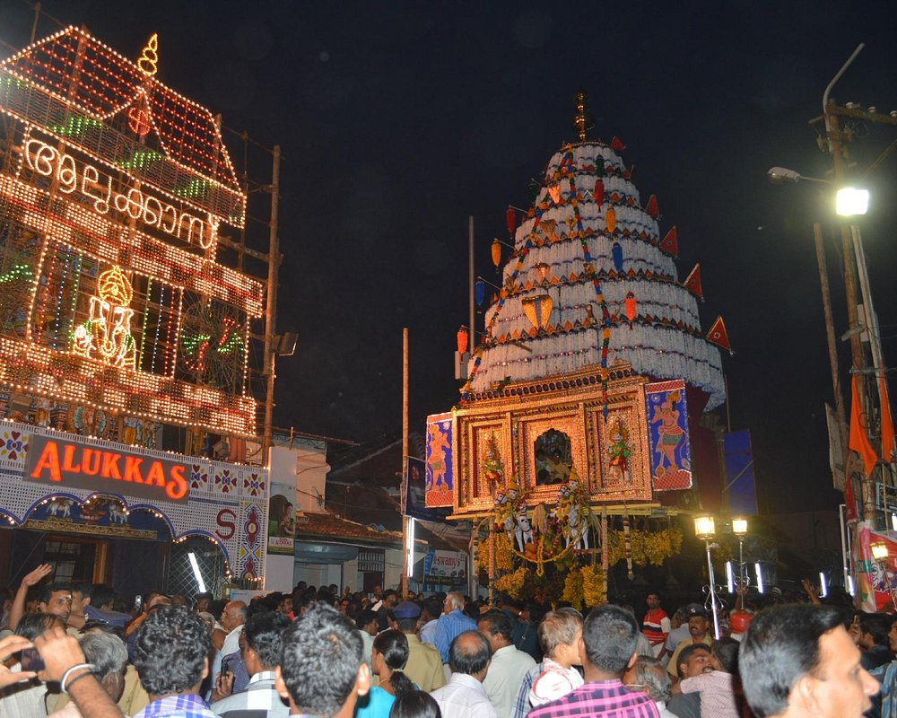
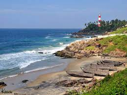
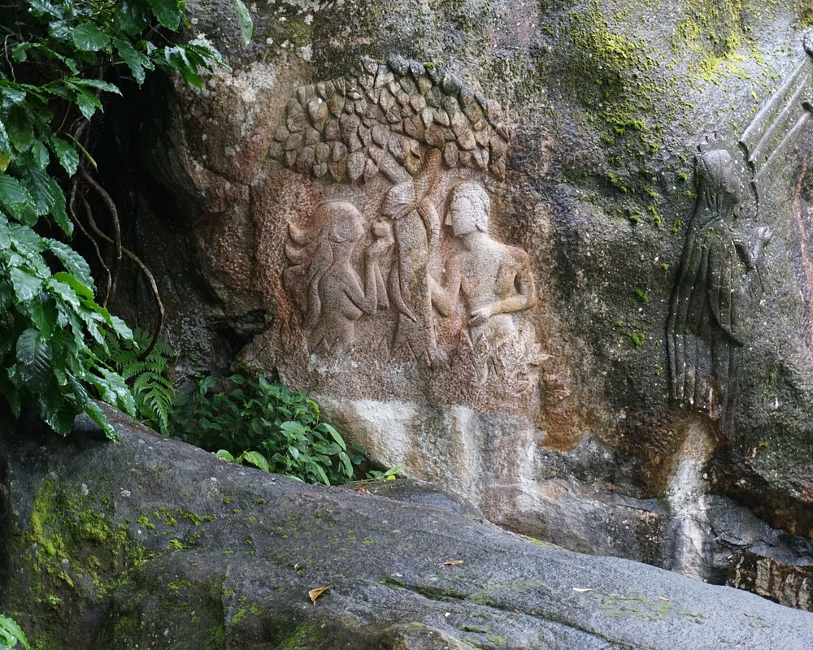
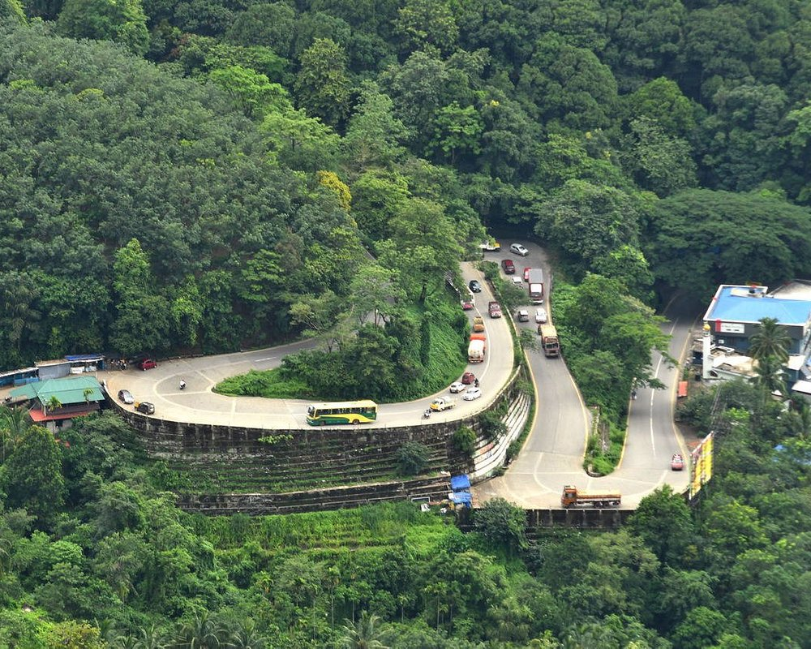

There are 14 districts in Kerala which are Thiruvananthapuram, Kollam, Alappuzha, Pathanamthitta, Kottayam, Idukki,Ernakulam,
Thrissur,Palakkad, Malappuram, Kozhikode, Wayanad, Kannur and Kasargod.
Ernakulam

Paniyeli Poru
Paniyeli Poru is 55 km from Kochi, India. It is an ideal location for one-day trekking.
Know More

Puthuvype Beach
Puthuvype is a 3 kms long beach situated in Puthuvype near the lighthouse in Kochi, Kerala
Know More
Previous
Next
Thrissur

Athirapally
Athirapally Watrerfalls is located 60 km from the Thrissur district of Kerala
Know More

Chavakkad Beach
Chavakkad Beach is a beach in Thrissur District in the Indian state of Kerala.
Know More
Previous
Next
Idukki

Periyar National Park
Periyar National Park is a wildlife sanctuary located in the Western Ghats mountain range of Kerala.
Know More

Malankara Dam
Malankara dam is a gravity dam constructed across Thodupuzha river for irrigation purposes.
Know More
Previous
Next
Palakkad

Tippu Sultan Fort
Tipu's Fort, also known as Palakkad Fort, is a beautifully maintained edifice in Palakkad district.
Know More

Kalpathy Temple
Sree Viswanatha Swamy Temple at Kalpathy is one of the oldest Siva temples in Malabar.
Know More
Previous
Next
Trivandrum

Sree Padmanabhaswamy Temple
It is the one of the 108 temples in India dedicated to Lord Vishnu.
Know More

Kovalam Beach
Kovalam Beach is famous for its resorts and ayurvedic massage centres
Know More
Previous
Next
Wayanad

Edakkal Caves
Edakkal Caves are two natural caves 25 km away from Wayanad in the state Kerala.
Know More

Lakkidi
Lakkidi is a small hill station located in the Wayanad district of Kerala, India.
Know More
Previous
Next